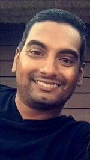

About Me
Hi, I'm Kevin, a student at the Georgia Tech Web Development Bootcamp in Atlanta, GA.
I graduated from Kennesaw State University with a Finance degree and have worked as a Business Operations Analyst for multiple consulting firms within the tech industry. After spending several years in this field, I decided I had finally hit the end of the road and want to now pursue a challenging and fulfilling career within the Web Development world.
I grew up in Atlanta and am a huge fan of our professional sports teams, especially the Atlanta Falcons.....who always find a way to break my heart each season. But that's okay, there's always next season. My wife and I enjoy hiking, traveling around the world, and eating/drinking our way through Atlanta. I also love listening to music, watching sports, and cooking partially edible meals.
To learn more about me, please drop me a message on my Contact page. Thanks for visiting my first website!